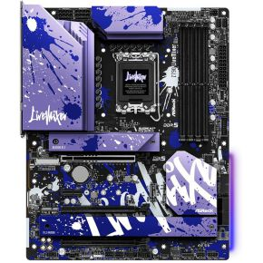

Daily Motherboard #13
NZXT N7 Z790
- Brand: Asrock
- Form Factor: ATX
- Chipset: Intel Z790
- Memory slots: 4x
- Memory type: DDR5
- Memory speed: -
- SATA-3 6Gbps: 4x
- Socket: 1700
- PCI-E 3.0 x1: 1x
- PCI-E 4.0 x16: 2x
- PCI-E 5.0 x16: 1x
Memory stuff
idk stuff
PCIE stuff
My opinion: I like the purple grafity look
Tweakers rating: Unknown/0 reviews Source
Source